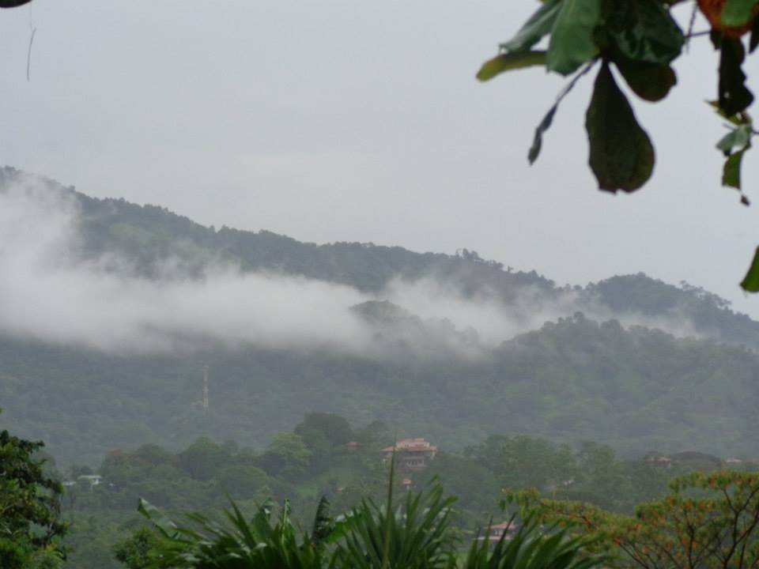
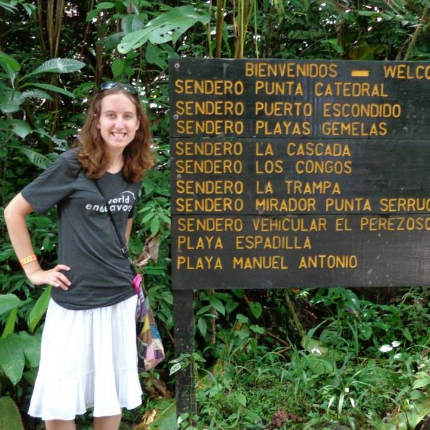

When I was in college, one summer I lived in a small town in Costa Rica called Atenas. Atenas is in the Alajuela province of Costa Rica and has an informal motto of "The best climate in the world". I lived with a host family for almost 2 months while volunteering at its Green Valley School. I improved my Spanish, learned new things about Costa Rican Culture, travelled in country and had a lot of fun during my time there.
My host family was a married couple (Victor and Alicia) and their teenage son Alonso. They were part of a farming co-op that grew oranges, coffee beans and mangoes. Alicia had a guest book of all of their guests for me to sign. In an 8-year span they had over 80 foreginers stay with them. They were a working-class family but had a separate little section of their home for myself and another college student from Minnesota, Emily. Emily did not speak very much Spanish at all so I interpreted for her. We each had our own room and only the 2 of us shared a bathroom. It was not fancy, and there was no hot water, but I was surprised that we had our own bathroom. Emily went home about a month before I did, so I had my own bathroom for a while. That's rather unusal for a home stay arrangment in Central America and here in the states I didn't have my own bathroom until I was in my 20s. My host family was very kind and Alicia told me they were not used to their guests being able to speak much Spanish so she was surprised at how fluent I was.
I volunteered as a classroom aide at a small school down the street from my host family's home. Their daughter was married and lived across town and was an English teacher there. A lot of the kids were also surprised by how much Spanish I spoke and asked me if I liked Justin Bieber and One Direction. There was only one native English-speaker at the school so the other teachers appreciated my help with English prounciation during class time. I also helped out during the science classes, which were conducted in English. The students were fascinated when I told them I lived in a place with frequent weather changes due to the fact that Atenas is in a Temperate climate. They only considered their town to have two seasons: the rainy season as "winter" and the dry season as "summer". My favorite part of teaching there was when I had a thank you card from teachers and students at the school with photo print outs.
On weekends myself and other students in town would take trips across the country. The most picaresque trip we took was to Playa Tamarindo. The beach there breathtaking and that trip was also my first trip to the ocean. We left at 4:30AM from Atenas to the beach and the non-air-conditioned bus trip took about ten hours. We stayed at a hostel where half of us had an air-conditioned room and the other half did not. The room with AC smelled like their was a gas leak, but my friends did not think it was an issue. The next day, thankfully they had someone inspect the room as there was a carbon monoxide leak. Those of us in the room without AC had an argument with a Candaian man who hogged the fan and were woken up by the sound of howler monkies. My favorite trip was when we went to Manuel Antonio National Park, as pictured below. Note, the orange hostel bracelet I was wearing and how thin I was due to lack of appetite all summer from the heat and no air conditioning.
